高氧下小鼠肺发育损伤的ScRNA图谱
原文：https://mp.weixin.qq.com/s?__biz=MzAwMzIzOTk5OQ==&mid=2247498513&idx=2&sn=79845edf56a3023c59c73403d7b6494b&chksm=9b3c8241ac4b0b57793402686edc8c35aaa3b0959d3096b5122207fbb70ab809d1df5faee0d7#rd 合集：单细胞教程全收录 / 文献速递
Biomamba荐语
这是一篇学徒作业，该文较为简单且结构清晰，我选择这篇文章的目的主要是让这位同学了解常规的单细胞测序分析思路。不过这篇文章也存在缺点——几乎把所有注释到的细胞全部都拉出来讨论了个遍，让人抓不住重点，所以全文阅读需要一定的耐心。但是由于其样本数较多（36例 ）、工作完整性高，文章的影响因子也相当可观（IF=14.91 ）doi:
10.1038/s41467-021-21865-2
链接：
https://www.ncbi.nlm.nih.gov/pmc/articles/PMC7946947/
Introduction
●1 支气管肺发育不良
晚期肺发育受损表现为支气管肺发育不良（BPD） ，这是儿童中最常见的慢性肺病。因早产而导致，并且由于对发育中肺部的产前和重复性产后损伤的异常修复反应而导致。除了肺泡和微血管形成受损外，肺部的免疫发育也会中断，导致反复的细菌和病毒性呼吸道感染。
●2 核心目的
为了模仿这些损伤，作者使用新生小鼠持续暴露于高氧从而导致BPD样肺表型。为了识别单个细胞类型的变化，作者采用多重单细胞RNA测序（scRNA-seq）来观察正常和受损晚期肺部 发育期间细胞组成和状态的变化。
Methods
●1 动物实验方案
在同一天分娩的新生小鼠幼崽在出生当天（P0）随机分配，并分成6至8个等大小的幼崽。随机化后，将小鼠笼子保持在室内空气中（正常氧，21%氧气）或高氧（85% 氧气）从出生观察到P3、P7、P14。
●2 MULTI-seq
单个细胞类型的丰度和特性在整个肺部发育过程中都是动态的。肺细胞的鉴定和分类在病理条件下变得更加复杂，特别是当疾病的性质是异质性的时。评估病理学分子特征的传统方法依赖于蛋白质或RNA的体积测量，但考虑到肺组织的异质性及其在发育后期的动力学，这些测量被细胞组成的变化所混淆。因此，无法识别单个细胞类型的变化。当反应仅限于稀有群体时，这将更难，因为这些变化将被来自更丰富的细胞类型的信号所掩盖。为了规避这些因素，作者采用多重单细胞RNA测序（scRNA-seq）。
●3 荧光RNA原位杂交
作者还通过BPD患者肺部样本中的荧光RNA原位杂交进行验证作者的发现。************
Results
●1 测序前实验部分 为了创建正常和受损发育肺的综合细胞图谱，作者在产后天（P）3、7、14生成了36只小鼠的scRNA-seq图谱 （如图1）。为了不影响实验结果的真实性，作者通过测量体重、肺容量、肺形态（通过平均线性截距（MLI）测量）评估了正常氧和高氧两组的差别（如下图2）。为了评估组织消化前体内的实际细胞贡献，作者对肺泡上皮2型（AT2）细胞进行了立体学评估。为了捕获肺中存在的不同细胞群，作者优化了单细胞制备方案。最后从36个正常和高氧中生成66200 个细胞的scRNA-seq谱来广泛分析发育中的小鼠肺在三个时间点（P3，P7和P14）的细胞组。
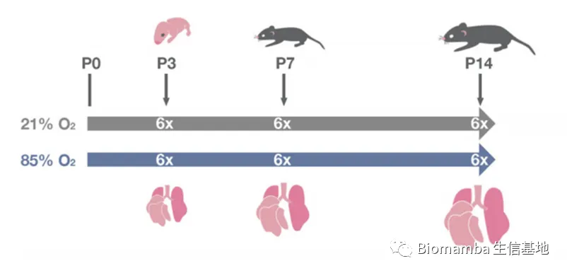
图1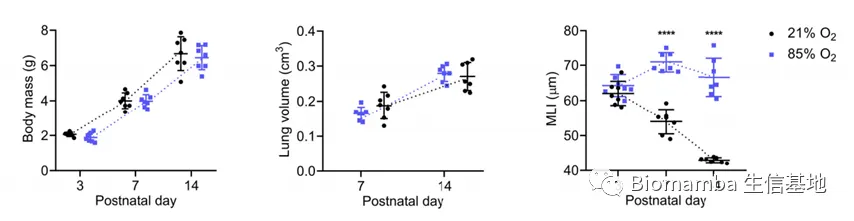
图2
●2 细胞分群概况
根据已建立的细胞标记物注释细胞类型(https://lungmap.net/ ）、细胞标志、人类蛋白质图谱(http://www.proteinatlas.org ）以及参考已发表的文献，作者共鉴定出34个细胞簇（如图3），分为六个主要细胞组：上皮细胞 、间质细胞 、内皮细胞 、髓样细胞 、淋巴细胞 和间皮细胞 。并观察到正常发育肺的细胞组成大多数在P7和P14之间发生动态变化，而高氧引起的肺泡发育受损改变了肺在所有时间点的细胞分布（如图4）。作者使用NicheNet工具根据配体、受体、相关通路成分和这些通路的基因组靶标的表达，推断高氧相关基因表达模式特有的细胞通讯（如图5）。信号通路和细胞通讯分析表明，高氧通过激活特定的内皮、上皮、间质和常驻肺免疫细胞亚群来促进先天性和适应性免疫反应、纤维化和几种途径干扰内皮发育和稳态，从而引发炎症。
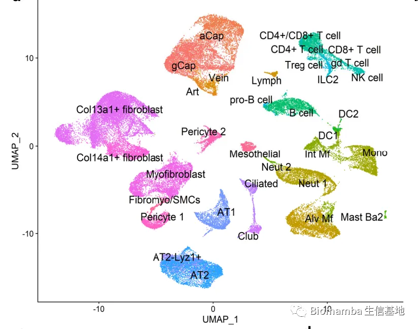
图3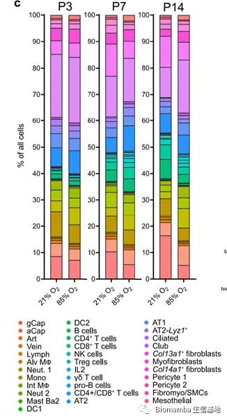
图4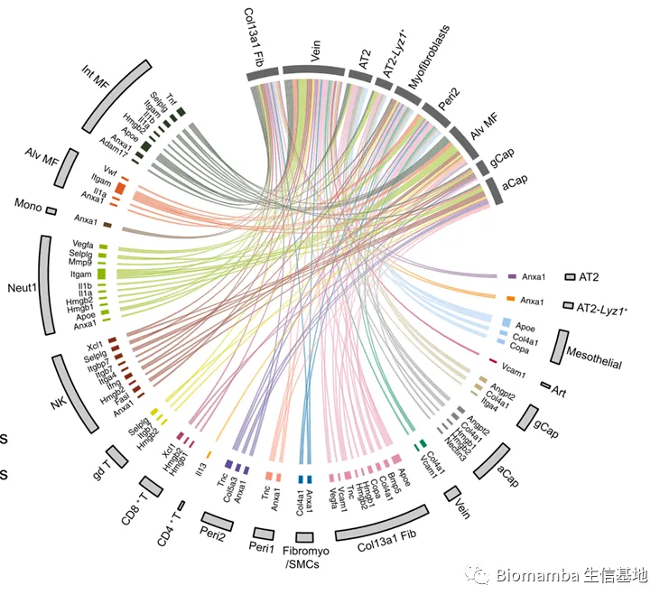
图5
●3 上皮细胞
作者鉴定了5群具有不同表达谱的上皮细胞群（如图6）。包括AT2 、AT1 、AT2-Lyz1+ 、Giliated 、Glub 。细胞通讯推断表明（如图5），AT2和AT2-Lyz1+在对高氧的反应过程中与其他细胞类型具有很强的互动性。该分析强调了两个AT2簇中的多种高氧相关效应，可能由来自间质，内皮和免疫细胞的信号介导，包括Vegfa和Tnf信号传导。高氧上调了间质巨噬细胞中Tnf的表达，这与AT2细胞中Tnf受体Nrp1和Dag1的表达有关，Tnf 是一种有效的促炎细胞因子；Nrp1 对于正常的分支形态发生至关重要；而Dag1在气道上皮伤口修复中起重要作用。此外，分析揭示了Angpt2对AT2细胞的潜在调节，其在两个毛细血管群（Cap，Cap-a）中被高氧上调。Angpt2是细胞表面受体ITGB1的配体，在肺分支形态发生过程中的上皮分层中至关重要。AT2人群的基因集富集分析（GSEA）表明（如图7），在高氧暴露后，与上皮、内皮和肺泡发育相关的途径被下调 。
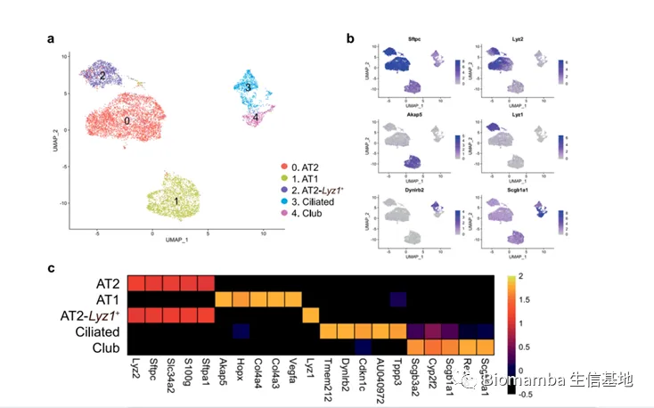
图6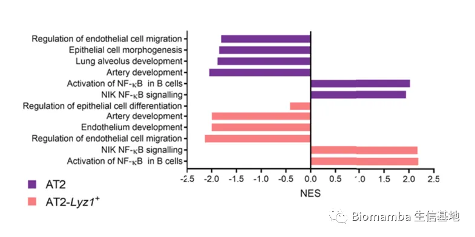
图7
●4 间质
作者鉴定了6个亚群，包括Col13a1+ fib 、Myofib 、Col14a1+ fib 、Pericyte 1 、Pericyte 2 、Fibromyo./SMCs （如图8）。作者根据Col13a1和Col14a1的表达对成纤维细胞进行了分类。细胞通讯推断显示（如图5）Col13a1+ fib、Myofib、Pericyte 2是高氧间质群中的强效信号发送者和接收器，基本上影响所有其他细胞区室。间质细胞接收到的高氧诱导信号主要来自免疫细胞，特别是Alv MΦ和Int MΦ，以及间质区室本身。与上皮细胞类似，该分析揭示了间质细胞中促炎性TNF信号通路的诱导，特别是Col13a1+ fib（如图9）。此外，作者还观察到了Anxa1的诱导，据报道Anxa1在肺成纤维细胞中作为TNF诱导的增殖和炎症反应的调节因子。这与GSEA分析中高氧介导的Col13a1+ fib中多种免疫途径的诱导相一致。
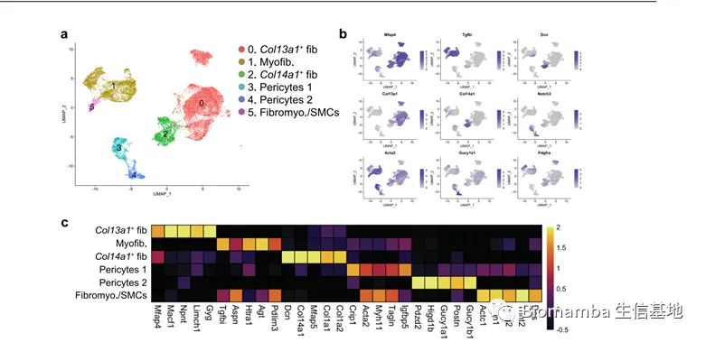
图8
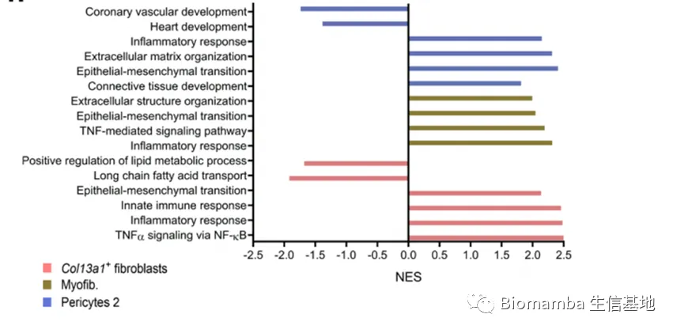
图9 ●5 内皮细胞 作者鉴定了5个内皮细胞亚群（如图10），包括gCap 、aCap 、Art 、Vein 、Lymph 。高氧显著减少了gCap细胞的数量，但增加了aCap细胞的数量，两种毛细血管通过Car4的表达来区分。Car4内皮细胞（aCap）有助于肺分离损伤后肺泡血运重建。高氧诱导的gCap和aCap细胞效应的GSEA表明（如图11），在高氧诱导的gCap和aCap细胞中，一些血管生成、发育和干细胞相关通路是下调的。细胞通讯推断表明（如图5），aCap是一种交互式细胞类型，在高氧中向肺部的其他细胞类型发送和接收信号，预测aCap细胞中一些高氧相关基因表达变化是由免疫和间质细胞主要表达的配体驱动的。作者观察到aCap细胞中Bmpr2的上调以及Col13a1+ fib中其配体Bmp5的显著上调。Bmpr2保护内皮细胞免受功能障碍，Bmpr2的丧失导致肺动脉高压 。
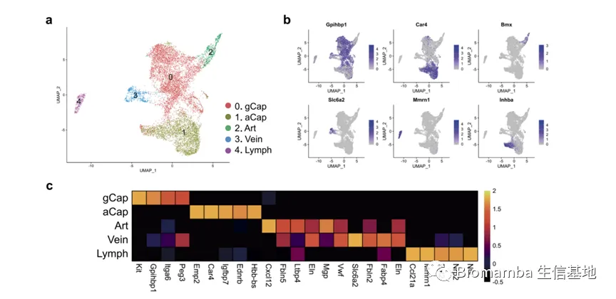
图10** **
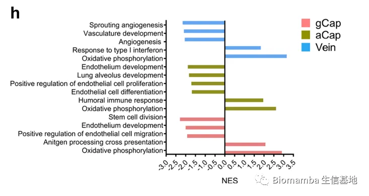
图11 ●6 免疫细胞 作者鉴定了8个免疫细胞群（如图12），包括Alv MΦ 、Neut 1 、Mono 、Int MΦ 、Neut 2 、MastBa2 、DC1 、DC2 。作者根据C1qb、Lgals3和Adgre1基因的表达确定了两个不同的巨噬细胞群，即Alv MΦ、Int MΦ。高氧诱导的AlvMϕ细胞表达变化的GSEA表明（如图13），激活的通路包括炎症反应 、白细胞迁移 、损伤反应和氧化磷酸化 。细胞通讯推断表明（如图5），在高氧症中，Alv Mφ作为交互式细胞类型在肺中发送和接收来自其他细胞类型的信号。Int Mφ细胞高氧效应的GSEA表明（如图13），上调的通路包括氧化磷酸化、先天免疫反应、趋化性、通过MHC I类抗原提呈。细胞通讯推断表明Int Mφ与Col13a1+ fib一起是旁分泌信号传导的强介质，释放的因子驱动许多细胞类型的基因表达变化。作者鉴定了两种中性粒细胞，即Neut 1、Neut 2，暴露于高氧导致Neut 1群的大小显著增加，并且高氧诱导的基因表达发生相当大的变化。GSEA结果表明（如图13），高氧诱导的参与这些细胞免疫反应的几种通路是上调的。细胞通讯推断表明（如图5），Neut 1细胞是向高氧肺中其他细胞类型发送信号的最活跃的细胞类型之一。
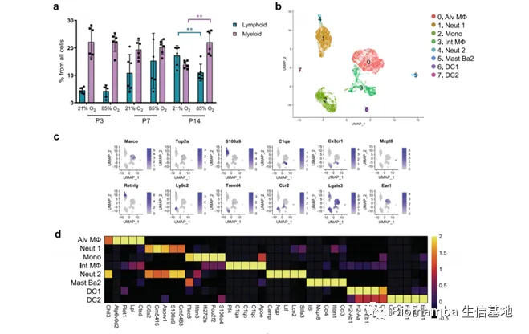
图12
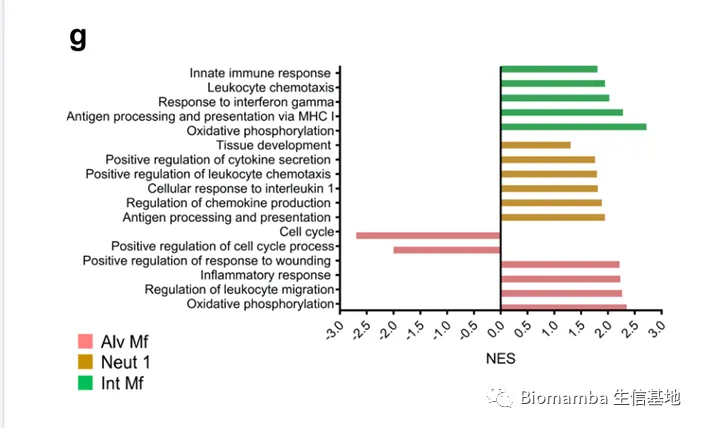
图13 ●7 淋巴细胞 作者根据已知Marker基因鉴定了9个淋巴细胞群（如图14、15）包括，B cells 、CD4+T cells 、CD8+T cells 、NK cells 、Tregcells 、ILC2 、γδT cells 、pro-B cells 、CD4 + /CD8 + T cells 。差异基因表达和GSEA表明（如图16），B cells和CD8+T cells群的表达变化最大，这些改变的通路包括炎症反应 、对INFγ的反应 、细胞周期 、氧化磷酸化 。NK cells，CD8+T cells和Treg cells被预测为相互作用的淋巴细胞类型，向肺部的其他细胞类型发送信号，驱动与高氧相关的变化（如图5）。
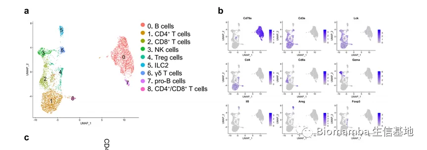
图14
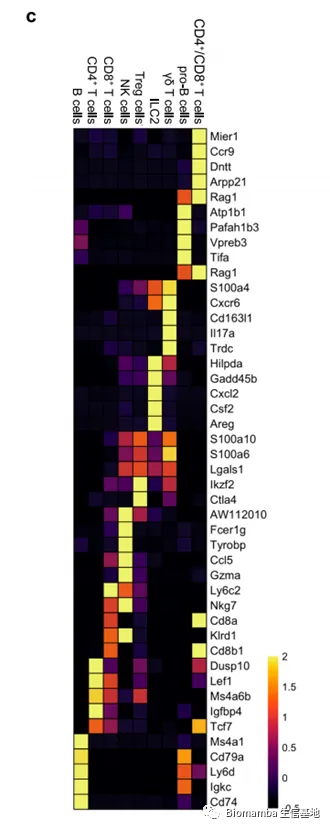
图15
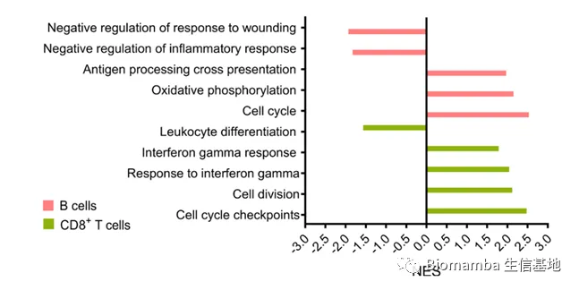
图16
Discussion
作者通过晚期肺发育的三个关键时间点（P3、P7、P14）跟踪肺的发育，共确定了5个上皮、6个间质、5个内皮、8个骨髓、9个淋巴、1个间皮细胞群。高氧暴露改变了所有的细胞隔间，特别是肺泡上皮、间质成纤维细胞、毛细血管内皮、巨噬细胞群。通路分析和预测的动态细胞串扰表明炎症信号传导是高氧诱导变化的主要驱动因素（如图18）。该研究的局限性包括组织分离导致的偏倚，以及与传统的流式细胞仪等单细胞方法相比，scRNAseq中用于定量的细胞数量引起的偏移较少。此外，另一个局限是P3和P7中动物的性别分布不均。

如何联系我们
 公众号后台消息更新不及时，超过48h便不允许回复读者消息，这里给大家留一下领取资料、免费服务器的微信号 ，方便各位随时交流、提建议(科研任务繁重，回复不及时请见谅)。此外呼声一直很高的交流群 也建好了，欢迎大家入群讨论：永久免费的千人生信、科研交流群
公众号后台消息更新不及时，超过48h便不允许回复读者消息，这里给大家留一下领取资料、免费服务器的微信号 ，方便各位随时交流、提建议(科研任务繁重，回复不及时请见谅)。此外呼声一直很高的交流群 也建好了，欢迎大家入群讨论：永久免费的千人生信、科研交流群
大家可以阅读完这几篇之后添加给生信入门初学者的小贴士 如何搜索公众号过往发布内容

 您点的每个赞和在看，我都认真当成了喜欢
您点的每个赞和在看，我都认真当成了喜欢